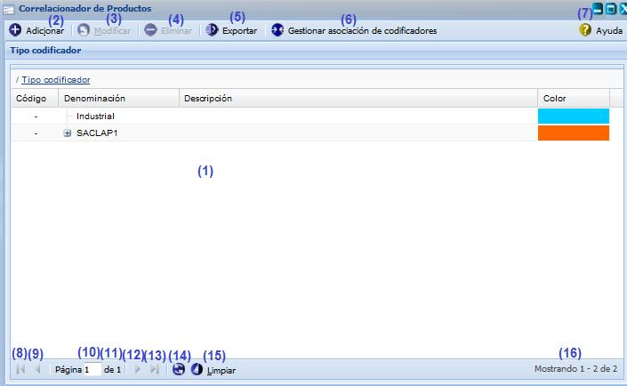
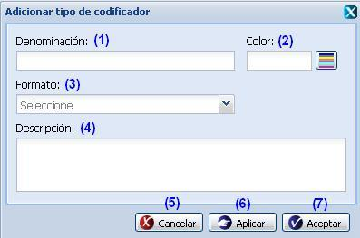
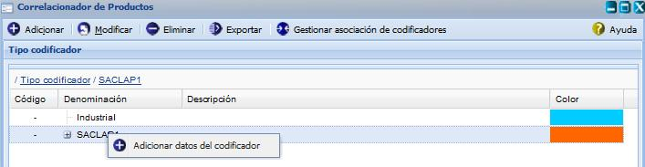
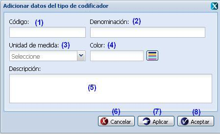
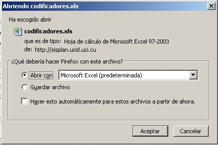
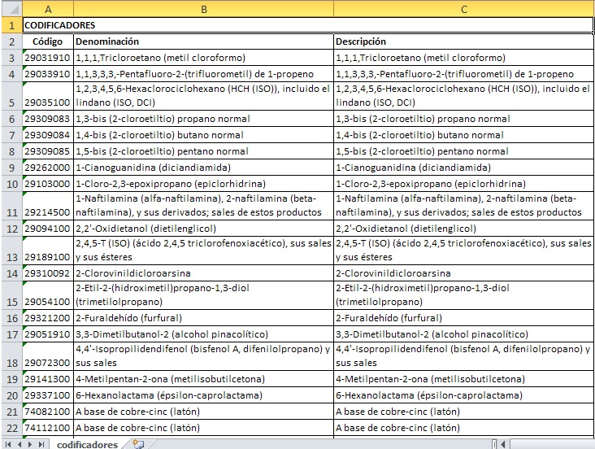
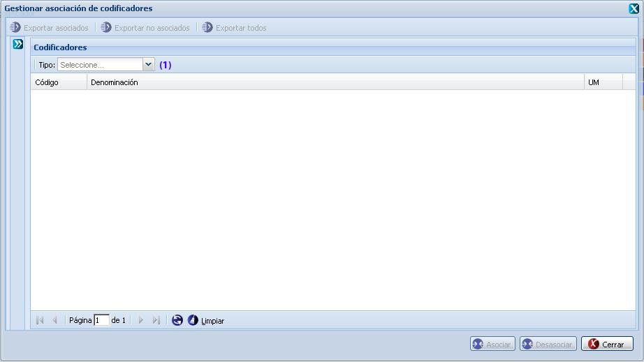
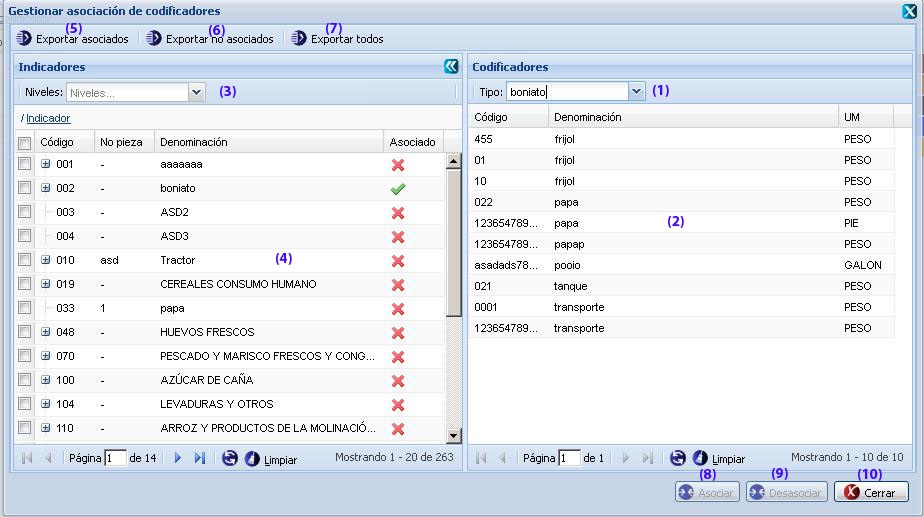

--Correlacionador de producto--
Para llegar a esta funcionalidad se puede acceder a través de la opción Inicio/Planificación material/Configuraciones/Correlacionador de producto, esta le permitirá definir los tipos de codificadores que podrán ser correlacionados al nomenclador de indicadores, a la misma solo tendrán acceso aquellos usuarios que presenten comportamiento rector. Una vez seleccionada la funcionalidad, aparecerá en pantalla la interfaz de la misma, ver figura 1.

Figura 1. Interfaz y acciones de la funcionalidad Gestionar tipo codificador.
Las diferentes opciones que conforman la figura anterior permiten:
-
Listar los tipos de codificadores.
-
Adicionar tipo codificador, ver Adicionar tipo de codificador, esta acción permite adicionar tipo de codificadores, para ejecutarla el sistema le mostrará la interfaz “Adicionar tipo de codificador”,cuando se presione el botón Aceptar o Aplicar de la interfaz el sistema mostrará un mensaje de información notificando que se adicionó el tipo codificador. Se puede acceder a esta funcionalidad con las teclas (Alt + I).
-
Modificar un tipo codificador previamente seleccionado en el listado. Una vez seleccionado el tipo de codificador y presionada la opción Modificar de la interfaz principal, el sistema le mostrará una interfaz con los datos cargados, posibilitando que se modifiquen los datos que se requieran. Se puede acceder a esta funcionalidad seleccionando el grupo y oprimiendo las teclas (Alt + M). El procedimiento del llenado de los datos y selección de los botones de la interfaz Modificar tipo de codificador es muy similar al descrito en la funcionalidad de Adicionar tipo de codificador.
-
Eliminar un tipo codificador previamente seleccionado en el listado. Esta acción permite eliminar el(los) tipo(s) de codificador(es) deseado(s), una vez seleccionado(s) se procede a seleccionar la opción Eliminar de la interfaz, automáticamente se mostrará un mensaje de confirmación, que se puede Aceptar o Cancelar según sea el caso, de presionar la opción Aceptar el sistema le mostrará un mensaje de información sobre el éxito de la operación realizada, quedando eliminado(s) el(los) tipo(s) de codificador(es) seleccionado(s), si cancela el mensaje de confirmación, el sistema permanece en la interfaz principal y no elimina el(los) tipo(s) de codificador(es). Se puede realizar esta operación seleccionando un tipo codificador en el listado y oprimiendo la tecla (Delete).
-
Exportar, ver Exportar, esta acción permite exportar los tipos de codificadores.
-
Gestionar asociación de codificadores, ver Gestionar asociación de codificadores, permite asociar codificadores con indicadores.
-
Mostrar ayuda de la funcionalidad. Se puede realizar esta operación seleccionando la combinación de teclas (Alt + H).
-
Ir a la primera página, mostrando los primeros tipos de codificador.
-
Ir a la página anterior.
-
Muestra el número de la página donde se encuentra, se puede introducir el número.
-
Muestra el número máximo de páginas.
-
Ir a la siguiente página.
-
Ir a la última página.
-
Actualizar el listado de los tipos de codificador.
-
Limpiar filtro(s). Esta acción limpiará todos los criterios de búsqueda, deshabilitando los filtros realizados. Se puede realizar esta operación seleccionando la combinación de teclas (Alt + L).
-
Mostrar la cantidad de resultados encontrados.
Adicionar tipo codificador
Para ejecutar esta funcionalidad se procede a presiona el botón Adicionar de la interfaz principal, ver figura 1. Inmediatamente aparecerá una ventana donde se podrán especificar los datos relacionados con el tipo codificador que se desea adicionar, ver figura 2.

Figura 2. Interfaz Adicionar tipo codificador.
Las opciones de la figura anterior permiten:
- Introducir la denominación del tipo de codificar que desea insertar.
- Seleccionar el color que presentará el tipo de codificador a insertar.
- Seleccionar el formato que presentará el tipo de codificador a insertar.
- Introducir una breve descripción del tipo de codificador. Este dato no es obligatorio.
- Cancelar las acciones y salir de la interfaz sin guardar los datos.
- Guardar los datos y limpiar los campos de la interfaz, permitiendo adicionar otro tipo de codificador.
- Guardar los datos los datos del tipo de codificador al listado y cerrar la interfaz.
Validación de los campos:
-
El campo Denominación, Color y Formato son obligatorios, en caso de dejar estos campos vacíos y presionar los botones Aceptar o Aplicar el sistema le notificará mostrando un mensaje de información, se acepta el mensaje, subraya en rojo el campo y muestra un mensaje de error al pasar el mouse por encima del campo.
-
El campo Denominación acepta letras y números, en caso contrario el sistema le subrayará el campo en rojo y le mostrará un mensaje, al pasar el mouse por encima del campo subrayado. No se permite escribir más de 255 caracteres en caso de que ocurra el sistema le subrayará el campo en rojo y le mostrará un mensaje de error, al pasar el mouse por encima del campo subrayado. Por último debe saber que no es posible adicionar un nuevo tipo de codificador con la misma denominación que otro que ya está registrado en el sistema, de suceder esto el sistema le notificará con un mensaje de error. En caso de introducir datos incorrectos o vacíos, y presionar el botón Aceptar o Aplicar, el sistema mostrará un mensaje de información notificando que existen campo(s) vacío(s) o con valor(es) incorrecto(s).
-
El campo Descripción puede ser vacío y admite cualquier tipo de caracteres de longitud infinita.
Adicionar datos del codificador
Para ejecutar esta funcionalidad se debe presiona clic derecho sobre un codificador, automáticamente el sistema le mostrará un menú, ver figura 3. Se selecciona la opción “Adicionar datos del codificador”, y el sistema le mostrará una ventana, ver figura 4.

Figura 3.Menú Adicionar dato del codificador.

figura 4. Interfaz Adicionar datos codificador.
Las opciones de la figura anterior permiten:
- Introducir el código del tipo de codificar que desea insertar
- Introducir la denominación del tipo de codificar que desea insertar.
- Seleccionar la unidad de medida que presentará el tipo de codificador a insertar.
- Seleccionar el color que presentará el tipo de codificador a insertar.
- Introducir una breve descripción del tipo de codificador. Este dato no es obligatorio.
- Cancelar las acciones y salir de la interfaz sin guardar los datos.
- Guardar los datos y limpiar los campos de la interfaz, permitiendo adicionar otro tipo de codificador.
- Adicionar los datos del tipo de codificador al listado y cerrar la interfaz.
Validación de los campos:
-
En este caso, el procedimiento del llenado de los campos Denominación, Color y Descripción de la interfaz Adicionar datos del tipo de codificador es muy similar al descrito en la funcionalidad de Adicionar tipo de codificador, para una mayor información consulte la interfaz Adicionar tipo codificador.
-
El campo Unidad de medida, al igual que los campos denominación, color y descripción, es un campo obligatorio y en caso de dejar este campo vacío, el sistema debe subrayar el campo en rojo y mostrar un mensaje de error, al pasar el mouse por encima del campo subrayado, y si presiona el botón Aceptar o Aplicar de la interfaz sin haber introducido algún valor, mostrará un mensaje de información notificando que existen campo(s) vacío(s) o con valor(es) incorrecto(s).
-
El campo Código acepta caracteres numéricos hasta 19 dígitos, en caso de introducir letras u otros caracteres especial se debe mostrar un mensaje de error y de sobre pasar la cantidad establecida se mostrará un mensaje de error en el mismo campo.
Exportar
Para ejecutar esta funcionalidad, se debe seleccionar la opción Exportar de la interfaz principal, ver figura 1. El sistema muestra la interfaz Abriendo codificadores con dos opciones como se muestra en la figura 5, se selecciona la opción Abrir con y el sistema muestra los codificadores exportados en un documento Excel, ver figura 6. Si se opta por la opción Guardar archivo este se guarda en la carpeta Descargas de la computadora.

Figura 5. Abriendo codificadores.

Figura 6. Codificadores exportados.
Gestionar asociación de codificadores
Para ejecutar dicha acción, se debe seleccionar la opción (6) de la figura 1, automáticamente el sistema le muestra una nueva ventana, ver figura 7.

Figura 7. Interfaz Gestionar asociación de codificadores.
Una vez mostrada la interfaz anterior, se procede a seleccionar un tipo de codificador de la opción los listados al desglosar el campo que aparece en la opción (1) de la figura 7. Luego de seleccionado el mismo se listan los datos del codificador seleccionado, se activan los botones Exportar y se despliega el panel indicadores como se muestra en la figura 8.

Figura 8. Interfaz Gestionar asociación de codificadores.
Las diferentes opciones que conforman la figura anterior permiten:
-
Seleccionar un tipo de codificador.
-
Listar los datos del tipo codificador seleccionado.
-
Seleccionar un nivel.
-
Listar los indicadores que se encuentran en el nivel seleccionado. Si no se selecciona ningún nivel se listan todos los indicadores.
-
Exportar los indicadores que están asociados a codificadores.
-
Exportar los indicadores que no están asociados a ningún codificador.
-
Exportar todos, esta opción permite exportar todos los indicadores.
-
Asociar un codificador a un indicador. Para esto es necesario seleccionar un codificador de los que se encuentran en la opción (2) de la figura 8, seguidamente se selecciona un indicador que no esté asociado de los que se encuentran en la opción (4) de dicha figura, automáticamente el sistema activa la opción Asociar, se procede a seleccionar dicha opción y el sistema muestra un mensaje de información, se presiona la opción Aceptar del mensaje y finalmente queda asociado el indicador a un codificador.
-
Desasociar, estar opción permite desasociar un codificador de un indicador. Para esto es necesario seleccionar un codificador de los que se encuentran en la opción (2) de la figura 8, seguidamente se selecciona un indicador que esté asociado de los que se encuentran en la opción (4) de dicha figura, el sistema activa la opción Desasociar, se selecciona la opción Desasociar, el sistema muestra un mensaje de información, se presiona la opción Aceptar del mensaje y finalmente queda desasociado el indicador.
-
Cancelar las acciones y salir de la interfaz sin guardar los datos.
Buscar tipos de codificadores
Esta funcionalidad permite efectuar una búsqueda mediante filtrado en las columnas. Para efectuar la misma debe estar en la interfaz principal, ver figura 1, una vez que accedió a esta se presiona clic en el botón “” que aparece en la parte derecha de cada columna. Luego de presionado el mismo, se procede a desplegar la columna y se ofrece la posibilidad de realizar búsqueda mediante filtrado. Se introduce o selecciona el criterio de filtrado según la información que brinde la columna seleccionada. Inmediatamente se presiona la tecla Enter y el sistema le mostrará en la interfaz los tipos de codificadores según el criterio de filtrado seleccionado. En caso de que no existan indicadores a mostrar para el criterio de filtrado seleccionado el sistema lo notificará mostrando el mensaje de información: “No existen datos que se correspondan con el criterio de búsqueda especificados.”.